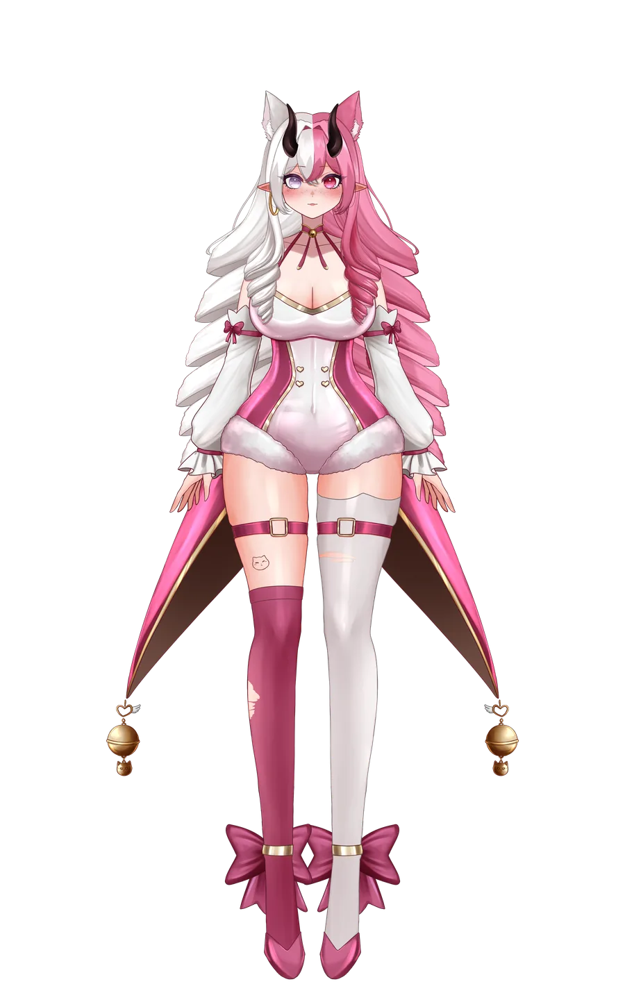
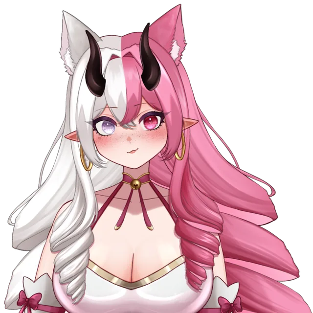
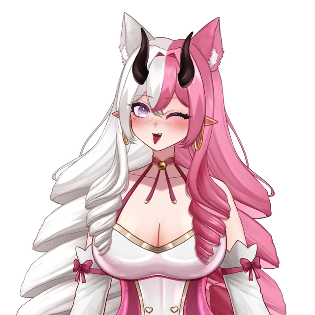
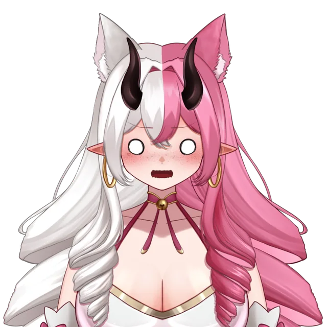
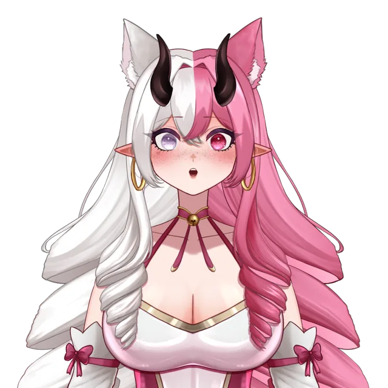

Gaming · YouTube
Let's play commenté
2 h de rushs réduits à 15 min : zooms sur les réactions, bruitages et compteur de morts à l'écran.
- Dérushage
- Zooms
- Sound design
Portfolio · Monteuse vidéo & VTubeuse
Moi c'est Aurore, VTubeuse et monteuse vidéo. Je transforme tes rushs et tes VOD en vidéos YouTube rythmées et en formats verticaux qui accrochent dès la première seconde.

Format horizontal · 16:9
Vidéos YouTube, best-of de stream, let's play, storytime : du dérushage à l'export, je garde le fil de l'histoire et je coupe tout ce qui fait décrocher.
2 h de rushs réduits à 15 min : zooms sur les réactions, bruitages et compteur de morts à l'écran.
Les meilleurs moments de plusieurs VOD, avec réactions du chat incrustées et transitions aux couleurs de la chaîne.
Jump cuts propres, illustrations et mèmes au bon moment, musique qui suit l'émotion du récit.
Mise en avant du modèle Live2D, recadrages sur les expressions et overlays retravaillés pour le format YouTube.
Format vertical · 9:16
Shorts, TikTok et Reels : une accroche dans la première seconde, des sous-titres lisibles sur mobile et un rythme qui donne envie de relancer la vidéo.
Avatar et gameplay empilés, sous-titres mot à mot.
Moment fort recadré, zooms et effets sonores punchy.
Rythme serré, emojis animés et titre accrocheur.
Un extrait qui renvoie vers la vidéo complète.
Ce que j'apporte à tes vidéos
Je retire les temps morts, les hésitations et les répétitions pour garder uniquement ce qui fait avancer la vidéo.
Sous-titres mot à mot, mots-clés en couleur, placés pour rester lisibles sur mobile et hors des zones d'interface.
Musiques libres de droits, bruitages, nivellement des voix et du gameplay pour un son propre du début à la fin.
Titres, transitions, overlays et couleurs cohérents avec l'identité de ta chaîne.
Passage du 16:9 au 9:16 en gardant l'action et ton visage (ou ton avatar) toujours dans le cadre.
Modèle Live2D ou 3D, réactions, overlays de stream : je sais mettre un avatar en valeur à l'écran.
Mes outils



À propos
Je suis AuroreTVv, VTubeuse en live sur Twitch. À force de monter mes propres clips et vidéos, j'ai fait du montage mon métier : aujourd'hui je monte aussi pour d'autres créateurs et créatrices.
Comme je suis moi aussi derrière la caméra (et l'avatar), je sais ce que demande une chaîne : publier régulièrement, garder son ton, et que chaque vidéo donne envie de regarder la suivante.
Questions fréquentes
Tu ne trouves pas ta réponse ? Pose-moi la question directement dans le formulaire.
Des vidéos longues pour YouTube (gaming, best-of de stream, storytime, vlogs, face caméra) et des formats verticaux pour YouTube Shorts, TikTok et Instagram Reels.
Par lien de téléchargement (Google Drive, WeTransfer, Swisstransfer…) ou simplement avec le lien de la VOD de ton live Twitch ou YouTube.
Chaque projet a son devis, gratuit : il dépend de la durée des rushs, de la durée finale, du niveau d'habillage et du délai. Décris ton projet dans le formulaire et je te réponds avec une proposition.
Oui, et avec plaisir ! Je connais les codes du VTubing et je sais mettre un avatar en valeur. Je monte aussi pour les créateurs face caméra.
Oui, la vidéo finale t'appartient. Je te demande simplement ton accord avant de la présenter dans mon portfolio.
Contact
Format, durée, style, délai : donne-moi un maximum d'infos et je te réponds rapidement avec un devis.
